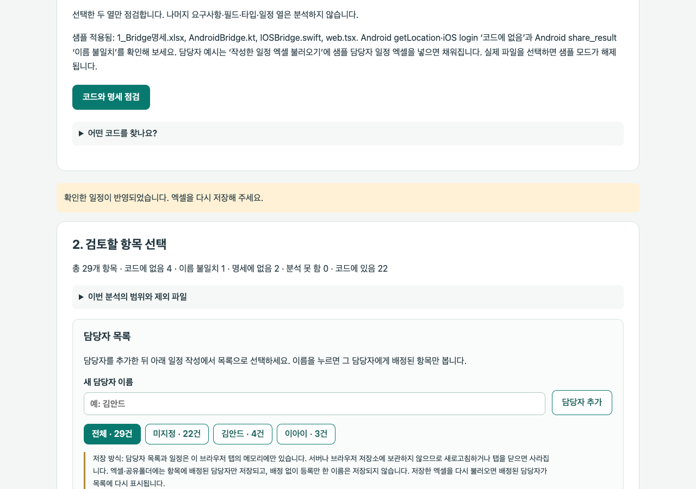

사이트의 샘플 적용 버튼을 누르면 명세 엑셀과 세 플랫폼 코드가 자동으로 들어가 바로 점검됩니다.
| 전체 점검 항목 | 29 |
| 코드에 없음 (Android getLocation, iOS login) | 4 |
| 이름 불일치 (share_result ↔ shareResult) | 1 |
| 명세에 없음 (openSettings 등) | 2 |
이어서 2_담당자_일정_불러오기용.xlsx를 불러오면 담당자와 일정이 반영됩니다.

자동 검증: 계약 24묶음 + 코드 점검 13묶음 + 하네스 12상태 통과 · 실제 브라우저에서 샘플 흐름 확인